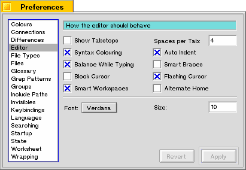

Editor
In this pane you can change the default settings used for new windows. You can choose a font and its size, change the width of a tabstop, and whether or not to show tabstops and to use syntax colouring.
Show Tabstops
If this checkbox is checked, every new document will display the tabstops in the toolbar.
Spaces per Tab
In this edit box you can enter the amount of spaces a tab is wide.
Syntax Colouring
If this checkbox is checked, Pe will use syntax colouring. The syntax colouring used depends on the language and is determined by the file extension.
Auto Indent
Auto Indent, when checked, will automatically enter the same amount of white space (tabs or characters) on the next line as there is on the current one when you press enter. Especially useful for programmers; not something you want if you just type normal text.
Balance While Typing
Balance while typing flashes the corresponding opening (curly)bracket/ parenthesis when you type a closing one. This is for programmers, so that they can check whether they closed all their opening parenthesis e.g.
Smart Braces
In the C programming language a curly bracket flags the beginning and ending of program blocks. Most programmers indent the code directly following an opening curly bracket and outdent after a closing one. When you've checked this checkbox, Pe will automatically indent code after an opening curly bracket and when you type a closing curly bracket, it will be outdented to the same width as the corresponding opening curly bracket.
Block Cursor
To have a block cursor instead of the default vertical bar, check this checkbox.
Flashing Cursor
If you don't like flashing cursors, uncheck this checkbox.
Smart Workspaces
When you choose an already open window from the Window menu, and if that window is opened in another workspace, Pe will pull that window to the current workspace before activating it-if this checkbox is checked of course.
Alternate Home
When you are working with code, most of the lines are indented. If you press the Home key (or the equivalent you've assigned to this action) the cursor is placed at the beginning of the line. If you check this checkbox, the cursor is first placed at the beginning of the text of the current line. If you press Home again, the caret will jump to the absolute beginning of the line.
Font and Size
Here you can choose the font and size to use for new documents.
Last updated: 05/17/98
Copyright 1997,1998, © Hekkelman Programmatuur,
info@hekkelman.com